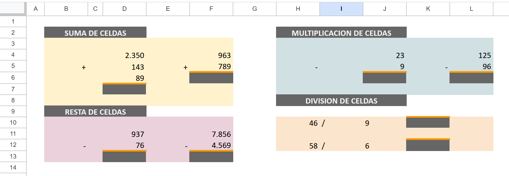

🎯 Objetivo
En esta actividad aplicarás operaciones matemáticas esenciales, mientras desarrollás habilidades de formato, organización y presentación de datos. ¡Es el primer paso para convertirte en un usuario eficiente y profesional de hojas de cálculo!
📐 Modelo de Referencia
Observá la siguiente estructura. Debajo de la línea o borde, deberás ingresar la fórmula que permita resolver la operación.
📋 Instrucciones Paso a Paso
- Creá una nueva planilla en tu software preferido (Google Sheets, Excel, LibreOffice Calc, etc.).
- Reproducí la esta planilla siguiendo el modelo de referencia. Respetá títulos, encabezados y la ubicación de los datos.
- Identificá las celdas debajo de la línea o borde. En cada una, escribí la fórmula que calcule automáticamente el resultado de la operación indicada.
-
Aplicá formato de celda a todos los valores
numéricos:
- 2 posiciones decimales
- Separador de miles con punto (.)
-
Mejorá la presentación visual:
- Cambiá las fuentes para diferenciar títulos, encabezados y datos.
- Ajustá la alineación (izquierda para texto, centro para números o categorías, derecha para montos).
- Agregá bordes, sombreados o colores de fondo para jerarquizar la información.
- Verificá que al modificar un valor de entrada, los resultados se actualicen automáticamente sin errores.
💡 Consejos Profesionales
-
Usá referencias relativas (
A1) o absolutas ($A$1) según corresponda para evitar errores al arrastrar fórmulas. - Un buen formato no es solo estético: facilita la lectura, reduce errores y muestra profesionalismo.
Recursos y Referencias
- Video: Microaprendizaje: ¿Cómo usar una planilla de cálculo? (abre en nueva pestaña)
- Video: Operaciones aritméticas básicas en planillas (suma, resta, multiplicación y división) (abre en nueva pestaña)
- Video: IngresarInformación (Fila y columnas, Ingresar texto, Ingresar números, Ordenar, Ingresar fórmula) (abre en nueva pestaña)
- Video: Selección de celdas (Libro y hojas, Selección de celdas, Serie numérica, Rango) (abre en nueva pestaña)
- Apunte del Taller: Capítulo 2
📤 Entrega
Nombre del archivo según convensión del taller
Actividad_05-Apellido